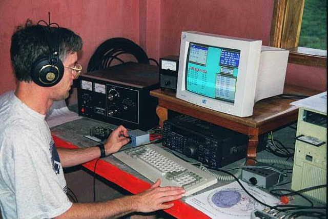
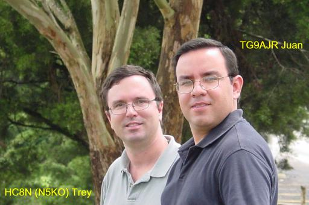
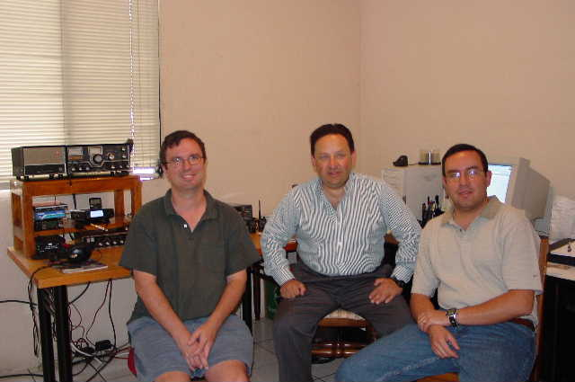
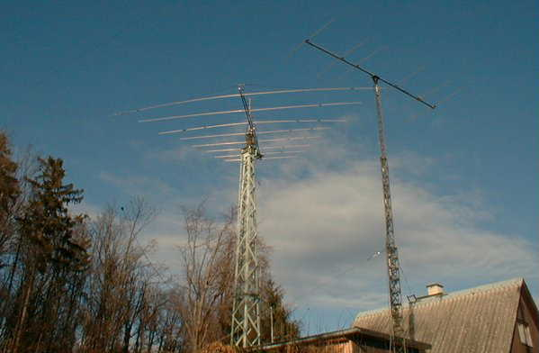
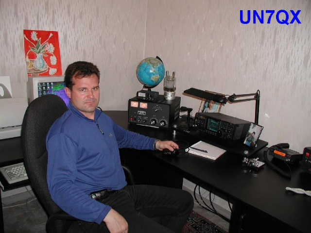

|
Flash ! DX
|
|
Flash ! DX
|
[Back Issues Nov.2001]
TIME:UTC(JST-09:00)
Report from JA1RJU (PM95sq)
30.Nov.2001(15:00d)
*9M-TV 02:00- 48.240/260 --
*VK-TV 03:00- 46.172/240 --
29.Nov.2001(15:00e)
*VK-TV 02:30- 46.172/240 --
*ZL-TV 02:30- 54.24/25/26--
*9M-TV 02:30- 48.240/260 --
ZL3NE 04:37 50.110 CW
ZL3SIX 04:38 50.040 CW Beacon
ZL-TV 04:40- 50.750 FM TV-Audio
V73SIX 06:20- 50.014 CW Beacon
ZL3TY 06:45 50.110 CW
|
◎ T2(Tuvalu)DX-peditionの結果 日本のチームによるT2(Tuvalu)からの運用は、11月3日から11日にかけて行なわれたが、 期待された6mのコンデションは意外に悪くQSO数は131(CW=118、SSB=13)だった。 HF帯を含めた全QSO数は27,121だった。(TNX JH7OHF)
T2T(HF)、T2SIX(6m)を運用するJH7OHF・小野さん |
28.Nov.2001(15:00e)
V73SIX 23:00- 50.014 CW Beacon
*VK-TV 03:00- 46.172/240 --
VK2DN 03:55 50.110 SSB/CW
VK2RHV 03:55- 52.325 CW Beacon
VK2YOC 03:59 50.110 SSB
VK4RGG 04:05- 50.057 CW Beacon
VK3GJW 06:42 50.110 CW
VK4CXQ 06:45 50.110 CW
VK3BQS 06:45 50.110/130 CW
VK3XQ 06:49 50.155 CW
VK2YOC 06:50 50.110 SSB
VK1ZQR 06:50 50.145 SSB
VK3DUT 06:50 50.125 SSB
VK3AZY 06:55 50.150 SSB
VK3GJW 06:56 50.150 SSB
VK2MP 07:11 50.160 SSB
P29BPL 07:15- 50.029 CW Beacon
VK7RAE 07:15- 50.057 CW Beacon
VK6RSX 13:30- 50.304 CW Beacon
| ◎ 連続オープンしていた午前中の北米/南米大陸の入感記録も今日で終止符を打った。 昨日同様、入感のDXメインは午後からのVK's。信号も強力。 |
27.Nov.2001(15:00g)
V73SIX 22:30- 50.014 CW Beacon
N7ET/DU7 23:44 50.110 CW
HC8N 00:25 50.110 SSB/CW
CX2PI 00:50 50.118 SSB
HC8N 01:11 50.110 CW CQing
*VK-TV 02:20- 46.172/240 --
VK2ZXC/M 02:37 50.110/150 SSB
VK2QF 02:40 50.110/106 CW
VK4APG 02:47 50.110 CW
VK3DUT 02:49 50.110/130 SSB
VK2DN 03:02 50.110 SSB
VK3ANA 03:13 50.110 CW
VK4NW 03:19 50.110/115 SSB
VK2HV 03:20 50.110 SSB
VK4AHW 03:20 50.110 SSB
VK2BDT 03:32 50.110 SSB
VK4KR 03:43 50.140 SSB
VK4ZSS 03:44 50.140 SSB
VK2RHV 03:45- 52.325 CW Beacon
VK2YOC 03:53 50.130 SSB
VK2EFT 04:03 50.107/125 CW
VK4NW 05:23 50.110 SSB
VK4RGG 05:23- 50.057 CW Beacon
VK8RAS 05:23- 50.047 CW Beacon
VK4CY 05:51 50.110/140 SSB/CW
N7ET/DU7 13:39 50.110 CW
|
◎ 2日連続で北米の入感は止まってしまったが、相変わらずGalapgos Is.のHC8Nは良く聞こえていた。
TG9AJR・Juanからの情報によると、HC8Nは昨日までに2,800 QSO's/40 countriesの成果を上げたと。
今日は北米方面のコンデションが落ち込んだ反面、久しぶりにVK2、4'sが強力に入感した。 "火曜日のEX8"は、クラスターにEX8MLT本人から"QRV中"のリポートがあったものの、残念ながらパスは無かった。 |
26.Nov.2001(15:00e)
V73SIX 22:05- 50.014 CW Beacon
DU1EV 23:46 50.108 CW
HC8N 23:53 50.120 SSB
HC8N 00:07 50.120 SSB
DU1EV 00:07 50.120 CW
PY3KN 00:33 50.115 SSB
HC8N 00:47 50.119 CW
HC8N 01:23 50.119 SSB/CW
V73SIX 05:50- 50.014 CW Beacon
VK8RAS 05:50- 50.047 CW Beacon
*9M-TV 05:50- 48.240/260 --
WH0/JK2VOC 07:38 50.110 CW/SSB
DU1/GM4COK 08:05 50.095 CW
VR2IL 09:13 50.130 SSB
25.Nov.2001(00:00a)
◎ 25.Novの"Flash DX"はお休みします。
24.Nov.2001(03:00d)
V73SIX 22:30- 50.014 CW Beacon
WA6OIB 23:38 50.102 CW
K6FV/B 23:40- 50.069 CW Beacon
AA7A 23:46 50.095 CW
K6FV 23:58 50.092 CW
KI6CG 00:08 50.150 SSB
K6KLY 00:17 50.098 CW
K6FV 00:25 50.093 CW
NN7J 00:27 50.150 SSB
KB7WW 00:33 50.085 CW
HC2FG 00:35 50.110 SSB
KL7IKV 01:42 50.110 CW
23.Nov.2001(15:00d)
*V8-TV 23:00- 48.252 --
N7ET/DU7 23:45 50.110 CW
DU1/GM4COK 23:49 50.105 CW
9M8YY 23:53 50.106 CW
DU1EV 00:06 50.117 CW CQ NA
9M8YY 00:10 50.106 CW
N7IJ 00:18 50.125 CW
N6RMJ 00:23 50.130 SSB
WA7HQD 00:24 50.135 SSB
K0YW 00:33 50.083 CW
W7ID 00:39 50.090 CW
WA7X/B 00:45- 50.070 CW Beacon GL=DM49HO
*VK-TV 03:20- 46.172 --
*9M-TV 07:00- 48.240 --
VK6RSX 12:45- 50.304 CW Beacon
22.Nov.2001(15:00e)
N7ET/DU7 23:50 50.101/110 CW
VE7FG/B 00:28- 50.033 CW Beacon GL=CO83
PY3DU 00:32 50.150/107 CW
K7HGK 00:36 50.160 SSB
WB7QBS 00:39 50.130 SSB
WX7R 00:49 50.150 SSB
KB7WW 00:50 50.092 CW
VK2TQP 03:22 50.110/130 SSB
VK4KHQ 03:36 50.110/120 SSB
VK4DFE 04:03 50.110 SSB
XV3AA 08:37 50.130 SSB
VK6RSX 13:00- 50.304 CW Beacon
|
◎ 北米や南米(PY)の入感があったものの、11/18-20日のオープンに比べると寂しい入感状況だった。
北米は西日本では良く聞こえていた様だが１エリアでは僅かに20分程度の短いオープン。
珍しくカナダからVE7FG(Prince George Amateur Radio Club=CO83)のビーコンが聞こえていた。 TG9AJR・Juanからの情報によると、HC8Nはこの3日間で約1,500(812=CW+685=SSB)局とQSOしたと。 夕方から夜間に掛けての南西のスキャッターによるヨーロッパは完全に無くなってしまった。 |
21.Nov.2001(15:00d)
W1IPL/7 23:28 50.100/135 CW/SSB DN62(Wyoming)
KE7NS 23:50 50.132 SSB
(XE2EED 23:58 50.140 SSB JA2-)
VE7AG 00:29 50.117 CW/SSB CQ no JA
AA7CQ 00:43 50.105 CW
K6FV 00:46 50.097 CW
N7ET/DU7 01:12 50.110 CW
HC8N 01:50 50.095 CW/SSB
HC8N 02:15 50.105 CW/SSB
V73SIX 03:30- 50.014 CW Beacon
V73SIX 06:50- 50.014 CW Beacon
DU1/GM4COK 12:28 50.110 CW
| ◎ 期待された北米のオープンは数局の入感があっただけ。 今日のHC8Nは西日本に良く入感していたが、1エリアでは最後の方で上昇した程度。 50.095MHzのSSBにまでJAはパイルアップしていたが？。 |
20.Nov.2001(15:00e)
W5AL 22:59 50.115 SSB
KC6MBI 23:00 50.115 SSB
W6RD 23:02 50.130 SSB
N0VSB 23:03 50.130 SSB
W6JKV/5 23:08 50.100 CW
HP2CWB 23:10 50.078 CW
AB7OI 23:11 50.135 SSB
KA7T 23:12 50.095 CW
N6JV 23:16 50.089 CW
K0YW 23:16 50.089 CW
HC8N 23:16 50.081 CW UP
N5WS 23:18 50.091 CW
WA6JRA 23:20 50.106 SSB
N9JIM/6 23:23 50.093 CW
V73AT 23:24 50.103 CW
W6QX 23:29 50.100 CW
XE2MX 23:33 50.086 CW
K6PKO 23:40 50.150 SSB
XE2EED 23:41 50.170 SSB
NT6K 23:44 50.134 SSB
K6CH 23:48 50.138 SSB
K7LEK 23:49 50.127 SSB
N6JV 23:54 50.120 SSB
W7RV 23:55 50.108 SSB
HP2CWB 23:59 50.078 CW
N6CMF 00:03 50.089 CW
W6IPW 00:04 50.110 SSB
ZF1DC 00:05 50.110 SSB
WB6NOA 00:10 50.122 SSB
W6SR 00:12 50.132 SSB
KB6NAN 00:12 50.250 SSB
KG6I 00:15 50.255 SSB
HC8N 00:32 50.120 SSB
N6EQ 00:43 50.145 SSB
N6RA 00:45 50.088 CW
WA6JRA 00:47 50.100 CW CQ HL
HC8N 00:48 50.081 CW
K6FV/B 00:49- 50.069 CW Beacon
W6XD 00:51 50.097 CW
W6QX 00:55 50.150 CW
KC6MBI 00:57 50.156 SSB
V73SIX 03:05- 50.014 CW Beacon
A45XR 05:10 50.105 CW
EX8MLT 05:14 50.170 SSB UP
EX8MLE 05:41 50.168 SSB
UN1SIX/B 06:00- 50.024.7 CW Beacon
V73SIX 06:00- 50.014 CW Beacon
UN7GM 06:05 50.109 CW
EX8MLT 06:20 50.170 SSB
V73AT 08:10 50.110 CW
DU1/GM4COK 09:12 50.106 CW
|
◎ 今朝はスタートの遅いオープンながら、昨日同様北米太平洋岸のW6、7からW5、XE、中米に掛けてFBに入感した。
メキシコのXE2EEDは今日も抜群の強さで、連日のJAオープンでそろそろ"QSO相手"が居なくなった？。
Galapgos Is.のHC8N(N5KO=Trey)も強力に入感、コンテストで鍛えた見事な運用で今日もJAのCWのパイルを処理していた。
HC8NはTS-690の50W+7elでQRVしているが、既に6mで900局とQSOしたと。 午前中に発生した地磁気嵐の影響か、コンデションは01:00zに急激に落ちてしまったが、午後には復活、 大陸方面からUN's、EX8などが入感してきた。 ローカルのTVが休止する火曜日にQRVのチャンスのあるKyrgyzstanのEX8MLT、EX8MLEの両局が05:00z頃から強力に入感、 エリア指定とスプリットを交えて、JAの全エリアと1時間以上にわたりSSBでQSOしていた。 |

6ｍで900局とQSOしたHC8Nのコンテスト・シャック(OPはN0JK)
19.Nov.2001(15:00g)
V73SIX 21:40- 50.014 CW Beacon
W7LN 21:50 50.102 CW Sc 120deg
VE6TA 21:53 50.102 CW ↓
VA5DX 21:54 50.102 CW
W7XU 22:10 50.095 CW
K5JL 22:20 50.104 CW
N0KV 22:25 50.098 CW
W6JKV/5 22:31 50.100 CW SP
N7KA 22:51 50.094 CW ↓
K6QXY 22:51 50.105 CW
XE2EED 22:55 50.130 SSB
VE7SL 22:57 50.095 CW
N6JV 22:58 50.096 CW
K6CH 23:05 50.090 CW
W6ME 23:06 50.090 CW
N6TK 23:09 50.155 SSB
VA7SZ 23:10 50.145 SSB
N0KQY 23:13 50.141 SSB
K5JL 23:16 50.134 SSB
HC8N 23:20 50.075 CW
ZF1DC 23:29 50.110 SSB
TI5BX 23:38 50.110/140 SSB
TI5KD 23:39 50.110/163 SSB
AA7A 23:40 50.085 CW
W7SSB 23:42 50.160 SSB
N0KV 23:42 50.156 SSB
ZF1DC 23:45 50.110 SSB
TG9AJR 23:54 50.135 SSB
9M6CT 00:04 50.116 SSB
XE2EED 00:15 50.130 SSB
HC8N 00:18 50.075 CW
NU6S 00:23 50.099 CW
V8YYY 00:25 50.153 SSB
ZP6CW 00:30 50.093 CW
PP8BCA 00:40 50.125 SSB
VR2XMT 01:34 50.110 SSB
VE7AG 01:35 50.110 CW no JA!
VK4CP 03:30 50.110 SSB
V73SIX 04:07- 50.014 CW Beacon
VK4RGG 04:10- 50.057 CW Beacon
VK4NW 06:03 50.110 SSB
|
◎ 昨日同様、南東のスキャッターで始った北米のオープンだったが、ショートパスに変わっても昨朝に比べ入感する局は少なかった。
北米の入感が少なかったものの、コンデションはW6、5の北米西南部から時間と共にメキシコ(XE)から中･南米に移り、
HC8(Galapagos Is)、ZF(Cayman Is)からTI(Costa Rica）、TG(Guatemala)、HC本土 、PYなどがFBに入感した。
ロングパスではお馴染みになっているTI5BX、TI5KDやZF1DCがショートパスで入感していたが、
GuatemalaのTG9AJRは久しぶりの中米の"珍局"。TG9AJR・Juanは今日のオープンで約30局のJA'sとQSOしたとの事。
使用RIGはFT-100Dに3el。HC8Nは昨日から北米-150局、EU-100局、JA-200局とQSOしたと。 (TNX TG9AJR & JF2MBF) |


JA'sとQSOしたHC8N(N5KO)(左)とTG9AJR・Juan。顔が似ているが兄弟ではないと！
右の写真は、左からHC8N(N5KO)、XE1KK、TG9AJR(Juanのシャックで)
| ◎ FO0/M・Marquesas IsのFO0SAI(OP.JI1JKW)が今日から運用を始めた。 運用場所はhiva oe島で、以前にFO0SIX(FO3BM)やFO0TOH(JA1OEM)などがQRVしたNuku hiba島よりはJAに対して若干条件は良い。 この島から11月21日まで運用、その後はF.PolynesiaのMoorea島に戻り23日まで運用する。 |
18.Nov.2001(15:00d)
W6NS 22:30 50.105 SSB
KB7WW 22:38 50.157 SSB
W6BYA 22:39 50.190 SSB
WD6E 22:40 50.206 SSB
K7CW 22:41 50.229 SSB
K0GU 22:44 50.275 SSB
K7MAC 22:46 50.242 SSB
K7ZS 22:48 50.215 SSB
W7JHS 22:52 50.094 CW
N0LL 22:55 50.088 CW
W7LR 22:58 50.082 CW
W7FKI 22:58 50.076 CW
W6QUV 23:00 50.090 CW
W5AL 23:01 50.095 CW
K7CW 23:01 50.102 CW
AA6S 23:06 50.121 SSB
K0CS 23:07 50.185 SSB
KA0JGH 23:08 50.180 SSB
WI6Z 23:17 50.135 SSB
W7WKR 23:19 50.147 SSB
KC7FFK 23:21 50.198 SSB
KF6CQ 23:22 50.205 SSB
N7TGF 23:23 50.234 SSB
W7DMM 23:23 50.226 SSB
WA7GCS 23:24 50.205 SSB
KD7HDL 23:29 50.150 SSB
AA7A 23:30 50.142 SSB
K0IP 23:31 50.139 SSB
K7AD 23:33 50.125 SSB
W7NTF 23:34 50.120 SSB
NA7L 23:34 50.120 SSB
N7VRZ 23:35 50.110 SSB
NU6S 23:35 50.100 CW
N7ET/DU7 23:37 50.104 CW
WB7EOK 23:37 50.135 SSB
K7MCX 23:39 50.209 SSB
9M6US 23:40 50.223 SSB
VE7CT 23:40 50.223 SSB QSO with 9M6US
K7TNT 23:41 50.223 SSB ↓
KJ7TH 23:41 50.223 SSB
N0XX 23:41 50.223 SSB
KB7WW 23:41 50.223 SSB
K7ND 23:42 50.223 SSB
W7NTF 23:42 50.223 SSB
N0VSB 23:45 50.223 SSB
W0IJR 23:46 50.223 SSB
W7EIR 23:47 50.160 SSB
XE2EED 23:49 50.150 SSB
W7EPD 23:52 50.108 SSB
W7FI 23:52 50.108 SSB
N7VRZ 23:53 50.110 SSB
VE6BMX 23:55 50.102 CW
VA7VV 00:00 50.099 CW
KB7WW 00:04 50.100 CW
K7LJ 00:04 50.227 SSB
KD7MWH 00:07 50.234 SSB
W7YPZ 00:08 50.330 SSB
KD7WH 00:12 50.203 SSB
K7MCX 00:13 50.195 SSB
KG6JDX 00:13 50.182 SSB ex 7J7ACX
W7YTZ 00:17 50.178 SSB
W7ARD 00:20 50.117 SSB
K7RWT 00:23 50.115 SSB
W6QUV 00:23 50.117 SSB
DU1/GM4COK 00:23 50.106 CW
WA7VHW 00:23 50.106 CW
K0JKM 00:25 50.125 SSB
VE7HPS 00:26 50.125 SSB
VE7SL 00:27 50.140 SSB
VA6SZ 00:29 50.130 SSB
KG6I 00:37 50.107 CW
W7NTF 00:38 50.107 CW
K7HGK 00:40 50.176 SSB
VE6PY 00:44 50.215 SSB
W7DEK 00:48 50.162 SSB
K0JJ/7 00:50 50.209 SSB
K7JX 00:53 50.290 SSB
W7TRX 00:56 50.290 SSB
W7JWC 00:58 50.280 SSB
W7ID 00:59 50.193 SSB
VE7FM/MM 01:00 50.157 SSB
K7IEY 01:13 50.091 CW
K7LJ 01:17 50.082 CW
W7NTF 01:18 50.100 CW
KC7VNG 01:20 50.170 SSB
9M6CT 01:21 50.140 SSB
K7KV 01:22 50.110 CW
KL7IKV 01:22 50.110 SSB
AC2K 01:28 50.095 CW
VK4JSR 01:31 50.134 SSB
KL7HBK 01:31 50.134 SSB
W7NTF 01:35 50.100 CW
VK4PU 01:38 50.100 CW
VK4BKM 01:41 50.117 SSB
PY5CC 01:42 50.137 SSB
NL7Z 01:46 50.122 SSB
KL7HBK 01:46 50.122 SSB
VK4APG 01:50 50.110 SSB
V73SIX 01:50- 50.014 CW Beacon
*9M-TV 02:00- 48.240/260 --
SM7FJE 09:05 50.079 CW
DK2PH 09:06 50.096 CW
XV3AA 09:18 50.146 SSB QSO with Eu's
| ◎ 早朝からW/VE/XEなどが入感、今サイクル最大の北米大陸のオープンとなった。 入感エリアは北はアラスカ(KL7)からカナダ(VE6、VE7)、北米太平洋岸のW6、7を中心に北米中部のW5、8、9、0と南はメキシコ(XE)までの広範囲に及んだ。 週末のこのオープンはQRVしている局も多く信号も強力で、50.050-50.350MHz付近の周波数帯は、 JA/Wの双方が入り乱れてCQを出す賑やかさだった。 |
17.Nov.2001(15:00f)
V73SIX 23:30- 50.014 CW Beacon
W9RM 23:30 50.100 CW from 130deg Sc
KB7WW 23:37 50.110/140 CW CN85(Oregon)
AL7JK 23:43 50.098 CW
NL7Z 23:53 50.140 CW
NN7J 00:01 50.110 SSB
KL7NO 00:05 50.120 SSB
K7KV 00:17 50.105 CW CN87
K7NQ 00:28 50.092 CW
N7EPD 00:40 50.110 CW
KB7WW 00:50 50.085 CW
9M6US 00:54 50.143 SSB
PY3SOL 01:05 50.120 SSB
KL7IKV 01:36 50.105 CW
KL7Y 01:40 50.106 CW
P29BPL 07:30- 50.029 CW Beacon
OH7KM 08:00 50.096 CW from 230deg Sc
SM3GSK 08:11 50.107 CW ↓
OH3XA 08:23 50.095 CW
OH7KM 08:00 50.096 CW
SM7FJE 08:30 50.085 CW
OH1XT 08:35 50.112 CW
SM4DHN 08:38 50.096 CW
DU1/GM4COK 12:37 50.110 SSB
16.Nov.2001(15:00a)
*VK-TV 02:00- 46.172/240 --
*ZL-TV 02:00- 45.25/25/26--
VK6RO 05:09 50.110 SSB
VK6HK 05:57 50.110 SSB
VK6AOM 07:25 50.110 CW
VK6IP 07:37 50.110 CW
VK6JJ 08:14 50.110 CW
VK6RPH 09:15- 50.066 CW Beacon
| ◎ 第29回SEANET Conventionが11月9日-11日の3日間、East Malaysiaの首都Kota Kinabalu(コタ・キナバル)で開催され、 200人を超える参加者で賑わった。大会の前後には現地から特別免許で運用する局も多く、6mでも日本人による運用も含め、 多くのコールサインが聞こえていた。 |


08.Nov-15.Nov.2001(00:00a)
◎ 08.Nov-15.Nov.の"Flash DX"はお休みします。 |
07.Nov.2001(15:00f)
V73SIX 22:30- 50.014 CW Beacon
KH6HME/B 23:15- 50.0615 CW Beacon
*VK-TV 23:20- 46.172/240 --
*9M-TV 23:20- 48.240/260 --
KH6SX 23:46 50.110 CW
V73SIX 00:00- 50.014 CW Beacon
KH6HME/B 00:00- 50.0615 CW Beacon
VR2XMT 00:12 50.110 SSB CQ SA
KH6SX 00:12 50.110 CW
VK4BLK 03:00 50.110 CW
VK4ABG 03:00 50.110 CW
9M6EVT 03:06 50.111 CW QSL via SP9BRP
UN1SIX 04:00- 50.0247 CW Beacon
UK9AA 04:27 50.110 CW
J28FF 04:52 50.110/115 SSB/CW
VU2LO 05:22 50.096 CW
JY9NX 05:34 50.110/093 CW
XU7ABY 05:43 50.112 CW QSL via F5TYY
9M6EVT 05:50 50.107 CW
XW0X 05:58 50.122 CW
XV3AA 06:08 50.130 SSB
VK4FNQ 06:13 50.110/160 SSB
VK4BLK 06:17 50.110 CW CQ EU
V73AT 06:21 50.110 CW
VK4BRG 06:25 50.110 SSB CQ EU
XU7ABY 08:40 50.112 CW
XW0X 08:40 50.133 SSB worked EU
I3LDS 08:50 50.089 CW
9A8A 08:52 50.097 CW
IZ5EME 09:05 50.118 CW
DL7QY 09:17 50.116 CW
IT9RZR 09:28 50.115 CW
I3LDS 09:40 50.091 CW
9M6EVT 09:50 50.107 CW
VK8RAS 13:15- 50.047 CW Beacon
VK6RSX 13:15- 50.304 CW Beacon
9M6APT 13:45 50.107 CW QSL via SP9PRO
|
◎ 昨日は地磁気嵐で昼前からバンドは"死んで"しまったが、今日は朝からKH6が入感コンデションは急激に回復に向かっている模様。
午後には東南アジア、西アジアの入感に続いてショートパス方向からVU2LO、JY9NXなどが強力に入感していた。
このオープンの少し前にはJ28FF(Djibouti)も入感、西日本を中心にQSO出来ている。 08:30z頃からヨーロッパが南西のスキャッターで入感。今夜の入感エリアはI(Italy)圧倒的に多い。 弱い信号は大陸からのTV-Buzzが強く聞き取り難い。
◎ T2(Tuvalu)DX-pedition 運用(07.Nov.2001) |
06.Nov.2001(15:00e)
V73SIX 22:30- 50.014 CW Beacon
KH6HME/B 23:00- 50.0615 CW Beacon
W6OAL/0 23:08 50.110 CW DM79(Colorado)
W0ETT 23:10 50.100 CW DM79(Colorado)
N0VSB 23:17 50.096 CW DM79(Colorado)
K0GU 23:20 50.094 CW DN70(Colorado)
N6CA 23:27 50.097 CW DM03(Cal)
N0VSB 23:28 50.096 CW DM79(Colorado)
K6CH 23:29 50.097 CW DM13(Cal)
W6OAL/0 23:32 50.099 CW
N7ET/DU7 23;34 50.103 CW
K0GU 23:38 50.094 CW DN70(Colorado)
W0MS 23:40 50.096 CW DM79(Colorado)
W7RV 23:43 50.091 CW
NN7J 23:45 50.115 SSB CN85(Oregon)
XE2EED 23:45 50.130 SSB
W6OAL/0 23:46 50.137 SSB
K0IP 23:46 50.140 SSB DN32(Idaho)
4F2KWT 23:47 50.140 SSB
N7IJ 23:51 50.160 SSB DN44(Idaho)
W1IPL/7 23:58 50.175 SSB DN62(Wyoming)
N0KV 00:01 50.090 CW (Colorado)
K0JY 00:09 50.102 CW DM68(Colorado)
NJ7A 00:12 50.100 CW DN30(Utha)
KL7HBK 00:13 50.100 CW
K6CH 00:15 50.088 CW
N6KZ? 00:17 50.101 CW
AJ6T 00:18 50.101 CW
W7UT 00:22 50.098 CW DM37(Utha)
W0BJ 00:28 50.105 CW DN91(Nebraska)
N6JV 00:32 50.098 CW
N7CZ 00:38 50.093 CW DN47(Montana)
KE7NS 00:46 50.136 SSB DN41(Utha)
W7KNT 00:95 50.090 CW DN26(Montana)
K0EU 00:58 50.101 CW DM79(Colorado)
W6JKV/5 01:06 50.101 CW
KB7WW 01:17 50.087 CW CN85(Oregon)
KL7IKV 01:38 50.105 CW
|
◎ 23:00z頃から01:00z頃まで北米がオープン。
今日の入感エリアはW6の西海岸よりも、W7のUtha、Monntana、Idaho、Wyoming州から、
W0のNebraska、Colorado州、W5のNew Mexico州までのロッキー山脈沿いが良かった。
特に1エリアではColorado州が良く聞こえていた。 午後の西アジア、ヨーロッパ方面は完全に"沈黙"、夜までバンドは完全に"死んで"しまった。 |
05.Nov.2001(15:00e)
V73SIX 22:15- 50.014 CW Beacon
P29BPL 22:15- 50.029 CW Beacon
*EU-TV 22:30- 48.250 --
V73SIX 00:00- 50.014 CW Beacon
(W/KL7/VE7 00:00-01:00 CW/SSB)
V73SIX 04:00- 50.014 CW Beacon
VK8RAS 04:50- 50.047 CW Beacon
VK6RPH 04:50- 50.066 CW Beacon
XW0X 05:32 50.110 SSB
SP2DDX 07:42 50.100 CW
ES1AJ 07:43 50.100 CW
SP4MB? 07:48 50.090 CW
OH1XT 07:56 50.086 CW
SM3VEE 08:04 50.096 CW
XW0X 08:08 50.122 SSB
SM7AED 08:37 50.105 CW
OZ4VV 08:45 50.087 CW
SM7BAE 09:00 50.100 CW
OZ1LO 09:18 50.076 CW
V73AT 09:20 50.110 CW
SM7AED 09:35 50.105 CW
SP6GWB 09:44 50.100 CW
OH1XT 09:53 50.115 CW
|
◎ 午前中に本州中部を中心にKL7(アラスカ)から北米西海岸がオープン。 昨日と同様、午後からヨーロッパがオープン。短いショートパスの伝搬から、直ぐスキャッターに変わったが、 今日の入感エリアは北欧から東欧まで広い範囲。 これだけ連続してオープンすると、さすがのヨーロッパも聞こえてくる局は常連だけ。 それでもJAのパイルはなかなか納まらない。 |
04.Nov.2001(15:00f)
V73AT 22:37 50.110 CW
LU2FFD 22:40 50.130 SSB
V73SIX 22:45- 50.014 CW Beacon
V73UX 22:53 50.145 SSB
V63SC 23:05 50.125 SSB
CE-Music 00:00 47.900 --
9G5AN 00:00 50.102 CW LP weak
KL7IKV 00:30 50.103 CW
V73SIX 00:40- 50.014 CW Beacon
ZK1AKX 00:47 50.104 CW South Cook I.
XV3AA 01:40 50.130 SSB
KH6SX 01:44 50.101 CW
KH6HME/B 01:44- 50.0615 CW Beacon
ZK1AKX 03:00 50.095 CW QSL via VE7XF
YB5QZ 04:30 50.110 CW
V73SIX 04:30- 50.014 CW Beacon
UN6P 06:28 50.107 SSB
UT5JAJ 06:35 50.106 CW
9G5AN 06:44 50.110 CW SP
LZ2CC 07:00 50.100 CW loud!
LZ2CC 07:09 50.140 SSB
YO7VS 07:02 50.095 CW
LY2BAW 08:26 50.089 CW
LZ2EV 07:05 50.102 CW
LZ5UV 07:06 50.096 CW
YL3AG 07:30 50.097 CW
YL3JN 07:33 50.150 SSB
LY2BYW 08:30 50.101 CW
XW0X 09:25 50.080 CW
V73AT 09:58 50.110 CW
DU1/GM4COK 11:55 50.106 CW
VK8RAS 12:30- 50.047 CW Beacon
VK6RSX 12:30- 50.304 CW Beacon
VR2XMT 12:38 50.110 SSB
VR2LC 12:39 50.110 SSB
|
◎ 早朝は南米(LU)のオープンに続いてロングパスでGhanaの9G5ANが入感。直後に近接した周波数でKL7が入感したため、
これを呼ぶ局で混信になり、東日本から9G5ANとのQSOは困難だった。
この後、ZK1AKXも出てきたため、この周波数は一時大混乱となっていた。 06:00zを過ぎた頃から西アジアからUN'sが入感し始め、その後ショートパスのヨーロッパが聞こえてきた。 昨日は北欧が中心だったが、今日はLZ、YO、YLなど東欧寄りの信号が強かった。 このオープンは地域差が多く、同じエリアでも入感状況は大きく変わっていた。 ヨーロッパが開き始めると同時に、Ghanaの9G5ANがヨーロッパ回りで入感、信号は弱かったものの、 今朝のロングパスを逃した局にはラッキーなオープンだった。9G5ANの運用は今日が最終日。 先月末までNorth Cook I.からZK1CGを運用していたW/VEの混成チームは、現在South Cook I.に移動してZK1AKXを運用している。 早速、今朝入感していたが、このチームや、JAチームが10日間近くトライしてもまともにオープンしなかったNorth Cook I. とSouth Cook I.のコンデションの違いは大きい。 |
03.Nov.2001(15:00f)
9G5AN 21:50 50.106 CW LP
V73SIX 21:50- 50.014 CW Beacon
KH6HME/B 21:50- 50.0615 CW Beacon
*EU-TV 22:00- 48.250 --
V73AT 22:17 50.110 CW
HC8GR/B 22:45 50.0355 CW Beacon
V73SIX 00:00- 50.014 CW Beacon
KH6HME/B 00:00- 50.0615 CW Beacon
XE1J 01:10 50.110 SSB
ZK1NCP 02:19 50.095 CW weak
V73SIX 04:45- 50.014 CW Beacon
V63SC 04:50 50.120 SSB
V73AT 06:34 50.110 CW
OH7KM 07:17 50.103 CW
XU7ABW 07:29 50.110/115 SSB
OH3XA? 07:32 50.100 CW
OH5LK 07:43 50.167 CW
9M6US 07:52 50.134 SSB
OH1XT 08:06 50.144 CW
XU7ABW 08:15 50.115 CW
OH0JFP 08:30 50.140 SSB
SM3BIU 08:41 50.100 CW
SM7BAE 09:22 50.105 CW
VK4BLK 12:00 50.110 CW
VK8RAS 12:00- 50.047 CW Beacon
VK4BRG 12:00- 50.077 CW Beacon
VK6RSX 12:00- 50.304 CW Beacon
VK4ABP 12:00- 52.347 CW Beacon
|
◎ 早朝からロングパスでGhanaの9G5ANが入感。入感時間は短く信号も弱い。運用は4日までで、明日が最後のチャンス。
太平洋方面のコンデションは上昇しているが、どう言うわけかJAとの相性の悪いZK1/N(North Cook)は、
昼前にほんの10数秒弱いBeaconが入感しただけで、遂に本格的なオープンが無いまま、今日でDXpeditionは終了した。 夕方からのヨーロッパは、07:00z頃から南西方向のスキャッターでOH、SMなど北欧が入感した。 08:30z頃に短時間入感したOH0JFPは初のAland Island.の局。 ヨーロッパと同時にQRVしていたXU7ABW(Canbodia)や8J1OMEにまでパイルを浴びせる相変わらずの"混乱"ぶりだった。
◎ T2(Tuvalu)DX-pedition 始まる(03.Nov.2001)
◎ UR5LXのQSLマネジャー |
02.Nov.2001(15:00g)
*ZL-TV 23:00- 45.25/25/26--
V73SIX 23:00- 50.014 CW Beacon
KH6HME/B 23:00- 50.0615 CW Beacon
XE2EED 23:00 50.128 SSB SC 120
N6EQ 23:13 50.130 SSB
DU1/GM4COK 23:38 50.106 CW
DU1EV 23:40 50.120 CW
*ZL-TV 00:00- 45.25/25/26--
*VK-TV 00:00- 46.172/240 --
*9M-TV 00:00- 48.240/260 --
KH6HME/B 00:00- 50.0615 CW Beacon
V73SIX 00:00- 50.014 CW Beacon
DU1EV 00:00 50.120 CW/SSB
VR2XMT 00:03 50.110 SSB
DU1/GM4COK 00:10 50.106 CW
FK8HA 01:00 50.120 SSB
VK2QF 01:12 50.095 CW
VK9KND 01:33 50.105 CW
VK9KNE 02:00 50.120 SSB
ZL3TY 02:01 50.110 CW
KH6HME/B 03:00- 50.0615 CW Beacon
V73SIX 03:00- 50.014 CW Beacon
VR2XMT 03:10 50.110 SSB
XU7ABW 03:15 50.110 SSB
UK9AA 03:20 50.102 CW
9M6US 03:50 50.130 SSB
UN7GM 03:56 50.110 CW
V63SC 04:00 50.120 SSB
UN6P 04:03 50.105 CW
KH6HME/B 05:00- 50.0615 CW Beacon
V73SIX 05:00- 50.014 CW Beacon
XU7ABW 06:17 50.112 SSB
(UX0FF 06:25 50.105 CW JA5)
V73AT 06:43 50.102 CW
9M6US 06:50 50.130 SSB
UT5JAJ 07:04 50.107 CW
N7ET/DU7 07:07 50.102 CW
OH2BC 07:51 50.096 CW SC 240
OK2ZW 08:06 50.091 CW UP6
LY2BAW 08:26 50.089 CW SC 240
OH1XT 08:33 50.100 CW ↓
OH2BH 08:39 50.110 CW
OH2BC 08:50 50.096 CW
XU7ABW 09:10 50.120 SSB
V73AT 10:26 50.110 CW
VK4ABW 11:32 50.110 SSB
VK8MS 11:34 50.110 SSB
V63SC 11:34 50.120 SSB
VK4ABP 11:35- 52.347 CW Beacon
VK4BRG 11:35- 50.077 CW Beacon
VK8RAS 11:35- 50.047 CW Beacon
P29BPL 11:35- 50.029 CW Beacon
YV5LIX/B 12:00 50.0753 CW Beacon LP
VR2IL 12:14 50.110 SSB
VK4CP/P 12:20 50.110 SSB
VR2XMT 12:23 50.110 SSB
4W/CU3FT 12:30 50.120 SSB QSL via CT1EEB
VR2HAM 12:34 50.105 CW
9Z4BM 13:15 50.120/125 SSB
9Y4AT 13:29 50.110 SSB
4W/CU3FT 13:30 50.120 SSB
|
◎ 早朝から南東方向のスキャッターで弱いW6/7、XE2などの米大陸・太平洋岸が入感した。
昨日は9G5ANのFBな入感があり、今日も期待されたロングパスのアフリカは残念ながらオープンせず、"2匹目"は居なかった。 03:00z頃からUK9AA、UN'sがFBに入感、夕方からのショートパスのヨーロッパも期待されたが、 1エリアで確認されたのはUT5JAJだけ。 それでも08:00z少し前から南西方向のスキャッターでヨーロッパがFBにオープン、1時間半ほどパイルが続いた。 SSBでQRVしていたXU7ABW(Canbodia)はヨーロッパ全土？からパイルを浴びていた。 夜間になって早々とYV5LIXのBeacon(50.075.5MHz)が入感、インド洋周りのロングパスがオープン。 50.120MHzに出ていた4W/CU3FTと入れ替わるように、南米のTrinidad and Tobagoの9Z4BMが入感、大パイルとなった。 今夜の入感状況は同じエリアの中でも信号の強さに大きな差があるオープンだった。 何時もながらのロングコールと指定無視で"罵声"の飛び交う6mとなった。
◎ T2(Tuvalu)DX-pedition 日程変更(02.Nov.2001) |

01.Nov.2001(15:00f)
9G5AN 23:05 50.106 CW LP
V73SIX 23:30- 50.014 CW Beacon
9G5AN 00:02 50.106 CW QSL via W7XU
(TU2MA 00:11 50.102 CW/SSB JA6/JR6 Okinawa)
(LU/PYs 00:30- 50.110- CW/SSB JA6/JR6 Okinawa)
KL7IKV 00:54 50.110/105 CW
*ZL-TV 01:00- 45.25/25/26--
*9M-TV 01:00- 48.240/260 --
9G5AN 01:13 50.106 CW again!
9G5AN 02:15 50.106 CW F.out
*VK-TV 02:30- 46.172/240 --
VK9KNE 02:58 50.105 CW
5B4FL 05:56 50.110/120 CW
VK4TZL 06:10 50.130 SSB
VK4WDM 06:10 50.130 SSB
VK4AFL 06:13 50.130 SSB
5B4AGM 06:18 50.100 CW
VK4KK 06:27 50.110 SSB/CW
VK4CP/P 08:17 50.110/120 SSB
V73AT 09:53 50.110 CW
S51ZO 11:28 50.110 CW
VK4CP/P 11:30 50.100 CW
DU1/GM4COK 11:32 50.104 CW
DU1EV 11:51 50.120 CW
|
◎ 今朝のコンデションはGhanaの9G5ANの入感で始まった。アフリカ西海岸からロングパスで入感したこの局は、
米国のグループによるDXpeditionの局。FT-100D+3CX800ampに7elからの信号は安定して入感、
1エリアでは約3時間以上も信号が確認出来た。 9G5ANが初めて入感した10/29日は、午前中にロングパスで沖縄に、午後からヨーロッパ回りのショートパスでJA8から本州まで入感している。 西アフリカからのロングパスによる本格的なオープンは、前々サイクルのEL2FY以来。 QSLはW7XU、運用は11月4日までの予定。 9G5ANが本土に入感していたこの時間帯に、沖縄・奄美ではTU2MA(Ivory Coast)が入感、QSO出来ている。 この局は100Wに5elでの運用。 アフリカ西海岸のナイジェリアから5N0HNDで運用している野田さんは、TU2を呼ぶJA'sをRST519で受信している。 何度かコールしたもののJAからの応答は無かったと。野田さんは100Wにワイヤー9elで23:00z頃に運用している。(TNX JL1IHE) 昨日は短時間UT5が入感、かろうじてヨーロッパのショートパスの"カケラ"が残っていたコンデションも、 今日は06:00z頃に5B4FL、5B4AGMが入感した程度で、1エリアではショートパスのヨーロッパからの信号は確認出来なかった。 それでも11:00z過ぎになって、昨日に続き南西のスキャッターで弱いヨーロッパが短時間入感。
◎ T2(Tuvalu)DX-pedition(01.Nov.2001) |
